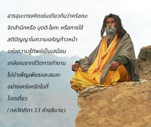

อรฺชุน ตรัสว่า โอ้ ชนารฺทน โอ้ เกศว ทำไมพระองค์ทรงปรารถนาให้ข้าพเจ้าต่อสู้ในสงครามอันน่าสะพรึงกลัวเช่นนี้ หากทรงคิดว่าปัญญานั้นดีกว่าการทำงานเพื่อผลทางวัตถุ

บุคลิกภาพสูงสุดแห่งพระเจ้าศฺรีกฺฤษฺณทรงอธิบายถึงสถานภาพพื้นฐานของดวงวิญญาณอย่างละเอียดในบทที่ผ่านมา ด้วยพระประสงค์ที่จะส่ง อรฺชุน สหายสนิทของพระองค์ให้ออกจากมหาสมุทรแห่งความทุกข์ทางวัตถุ และทรงแนะนำวิถีแห่งการรู้แจ้งตนเอง คือ พุทฺธิ-โยค หรือกฺฤษฺณจิตสำนึก บางครั้งมีผู้เข้าใจผิดคิดว่า กฺฤษฺณจิตสำนึกหมายถึงความเฉื่อยชา เกียจคร้าน ผู้ที่เข้าใจผิดเช่นนี้จะปลีกตัวไปอยู่ตามลำพังโดยสวดมนต์ภาวนาพระนามอันศักดิ์สิทธิ์ขององค์ศฺรีกฺฤษฺณ เพื่อให้มีกฺฤษฺณจิตสำนึกโดยสมบูรณ์ หากว่าไม่ได้รับการฝึกฝนในปรัชญาแห่งกฺฤษฺณจิตสำนึกแล้วจะไม่แนะนำให้ไปสวดภาวนาพระนามอันศักดิ์สิทธิ์ขององค์ภควานฺโดยลำพัง ซึ่งอาจได้รับการสรรเสริญเยินยอจากประชาชนผู้พาซื่อ อรฺชุน ทรงคิดเช่นเดียวกันว่ากฺฤษฺณจิตสำนึก หรือ พุทฺธิ-โยค หรือการใช้สติปัญญาในความเจริญก้าวหน้าแห่งความรู้ทิพย์เป็นเสมือนการเกษียณจากชีวิตการทำงานไปบำเพ็ญเพียร และปฏิบัติสมถะอย่างเคร่งครัดในที่โดดเดี่ยว อีกนัยหนึ่ง อรฺชุน ทรงปรารถนาที่จะหลีกเลี่ยงการต่อสู้ และใช้ความชำนาญอ้างเอากฺฤษฺณจิตสำนึกมาเป็นข้อแก้ตัว แต่ในฐานะที่เป็นศิษย์ผู้มีความจริงใจ อรฺชุน ได้วางปัญหาลงต่อหน้าพระอาจารย์และถามองค์กฺฤษฺณว่า ควรปฏิบัติอย่างไรจึงจะดีที่สุด ในการตอบคำถามนี้องค์ศฺรี กฺฤษฺณ ทรงอธิบาย กรฺม-โยค หรือการทำงานในกฺฤษฺณจิตสำนึกอย่างละเอียดในบทที่สามนี้